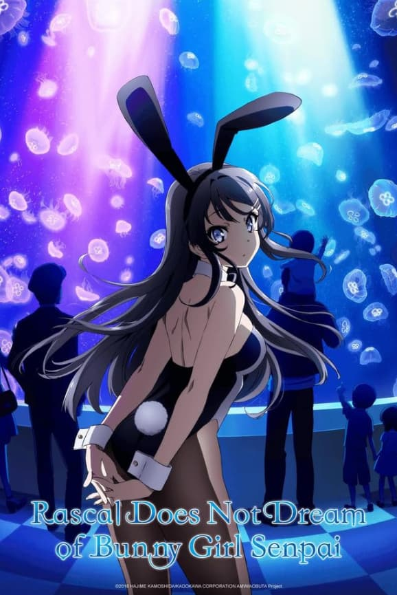
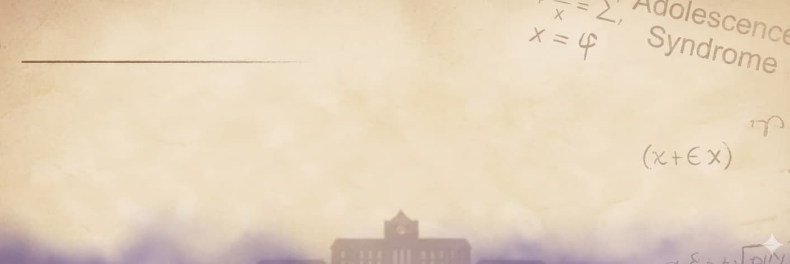
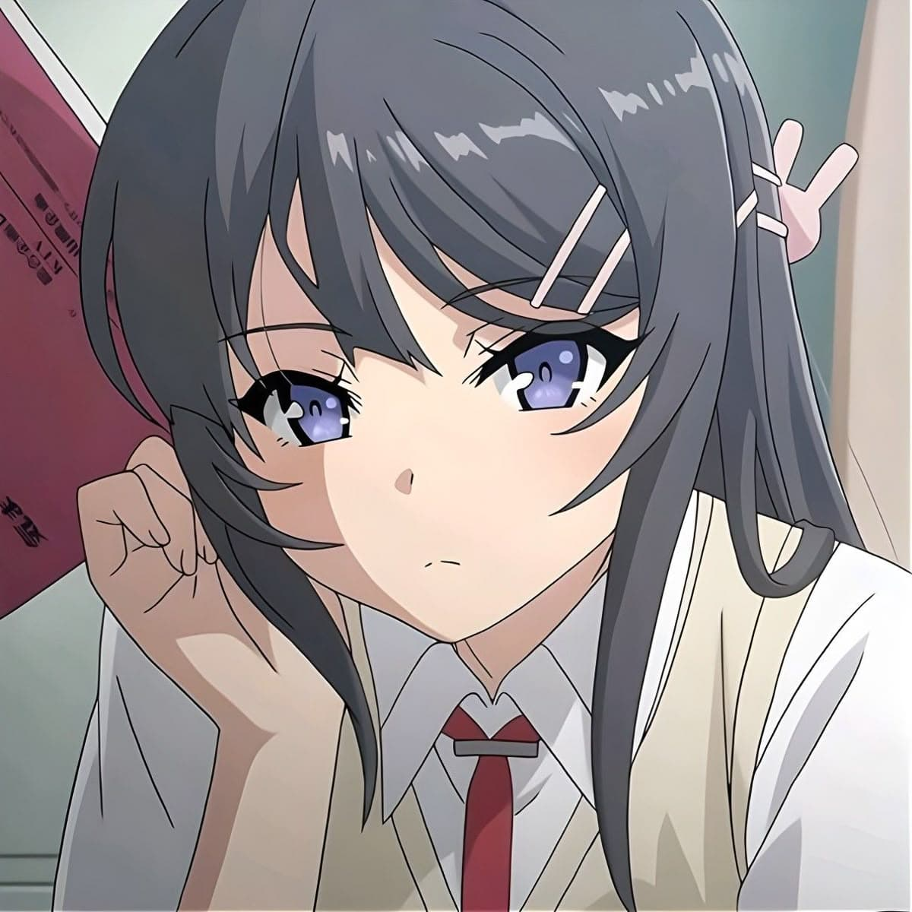
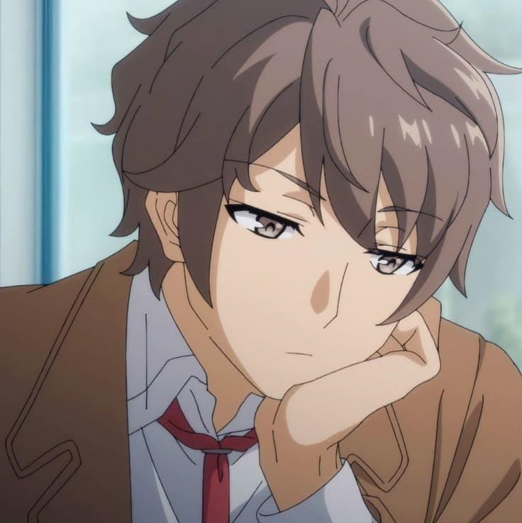
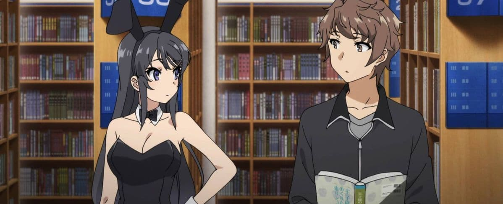
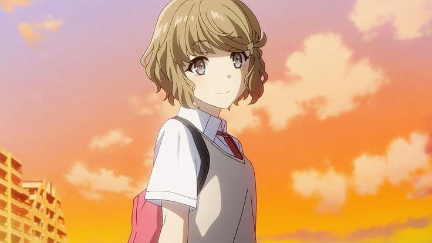
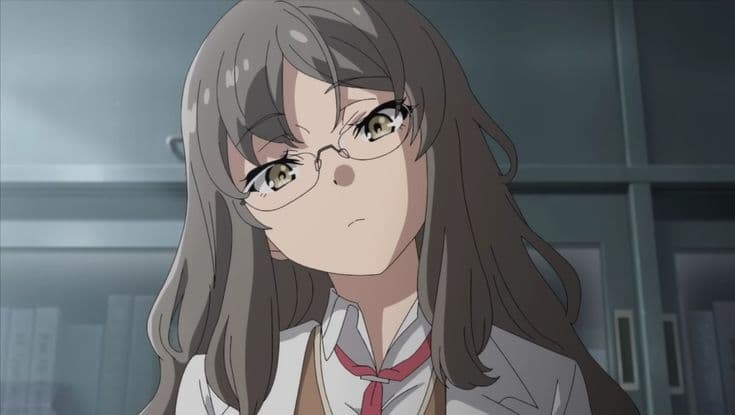
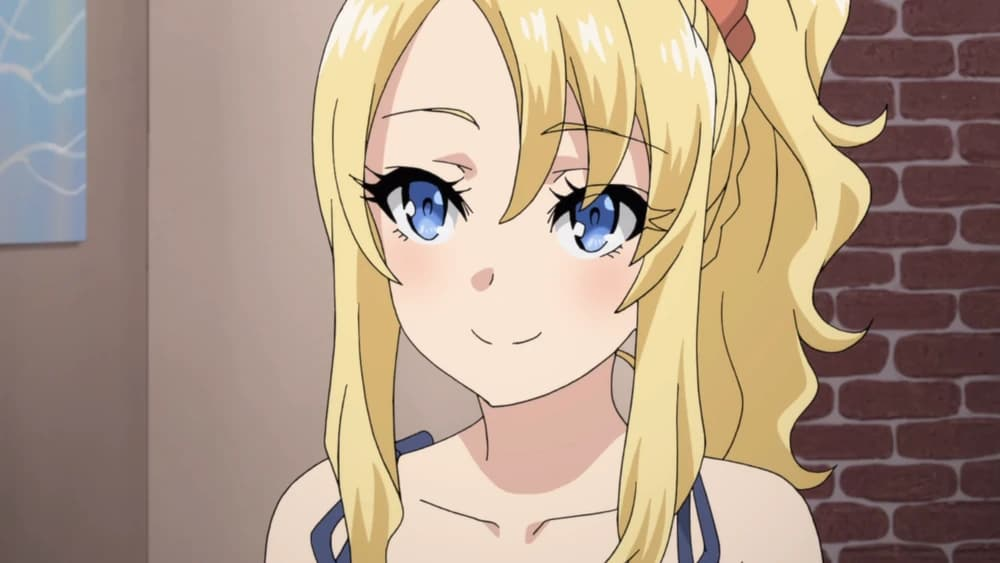
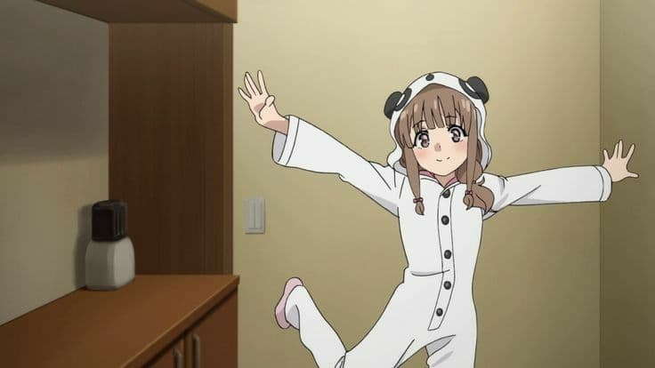

Show Overview
High school student Sakuta Azusagawa's life takes a turn for the unexpected when he meets teenage actress Mai Sakurajima, dressed as a bunny girl, wandering through a library and not being noticed by anyone else there. Mai is intrigued that Sakuta is the only one who can see her, as other people are unable to see her, even when she is dressing normally or attempting to stay away from celebrity life. Calling this phenomenon "Adolescence Syndrome" (思春期症候群, Shishunki Shōkōgun), Sakuta decides to solve this mystery, while continuing to get closer to Mai and meeting other girls who suffer from Adolescence Syndrome as well.

The First Encounter

Tomoe Koga Arc

Rio Futaba Arc

Nodoka Toyohama arc

Kaede Azusagawa arc